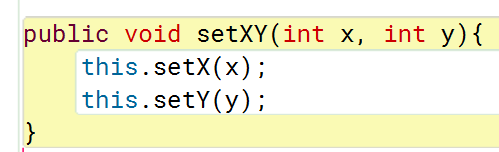

Getter und Setter in Java
Lösen Sie die Aufgaben in BlueJ und klicken Sie dann auf
Weiter
, um die Lösung zu sehen.
Programmiere Methoden für folgende Anforderungen:
3. x- und y-Koordinate gleichzeitig setzen.
